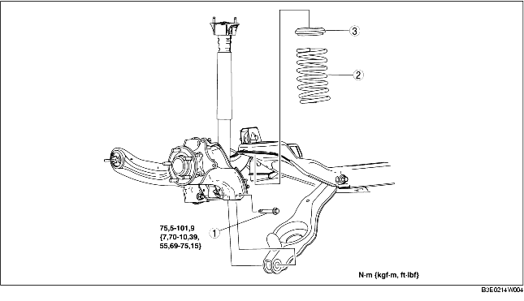

1. Déposer le capteur arrière de réglage automatique des phares. (voir la section DÉPOSE/REPOSE DE CAPTEUR DE RÉGLAGE AUTOMATIQUE DE NIVEAU DE VÉHICULE.)
2. Déposer le stabilisateur arrière. (voir la section DEPOSE/REPOSE DE STABILISATEUR ARRIERE.)
3. Déposer les différents éléments selon l'ordre indiqué dans le tableau.
4. Pour la repose, suivre l'ordre inverse de la dépose.
5. Inspecter la géométrie des roues, et opérer les réglages nécessaires.
(voir la section GEOMETRIE DE ROUE ARRIERE.)

.
|
1
|
Boulon extérieur de bras inférieur arrière
(voir la section Note sur la dépose de boulon extérieur de bras inférieur arrière.)
|
|
2
|
Ressort hélicoïdal arrière
(voir la section Note sur la repose de ressort hélicoïdal arrière.)
|
|
3
|
Caoutchouc de siège de ressort supérieur
|
1. Soutenir le bras inférieur arrière à l'aide d'un cric.
2. Desserrer le boulon intérieur du bras inférieur arrière.
3. Déposer le boulon extérieur du bras inférieur arrière.
1. Positionner le cric sous le bras inférieur arrière, et faire monter le cric progressivement.
2. Aligner l'extrémité supérieure du ressort hélicoïdal arrière avec le pas du caoutchouc d'assise de ressort supérieur.
3. Aligner l'extrémité inférieure du ressort hélicoïdal arrière avec le pas du caoutchouc d'assise de ressort inférieur.
4. Reposer le boulon extérieur du bras inférieur.